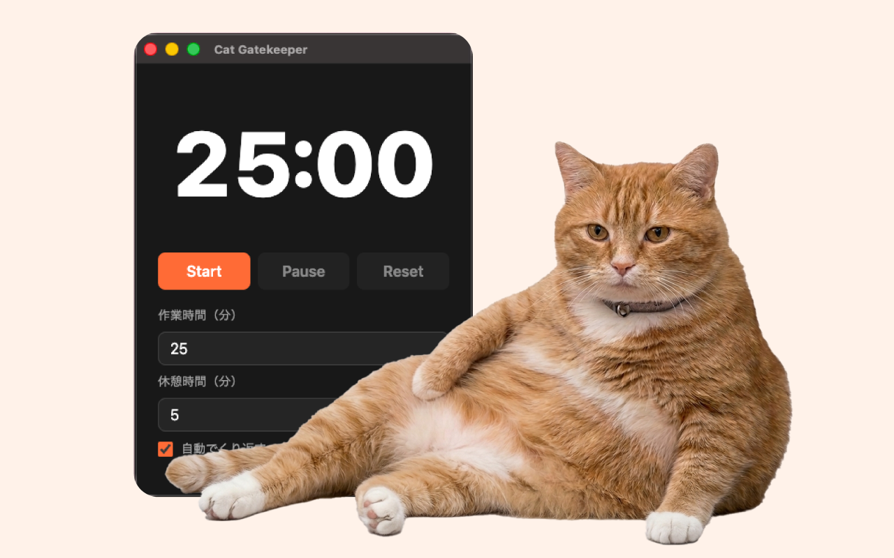

2026年5月1日：公式サイト公開
Cat Gatekeeperの公式サイトを公開しました。



WHAT'S NEW
Cat Gatekeeper Desktopの紹介ページを公開しました。
Cat Gatekeeperの公式サイトを公開しました。
New Cats

Which one?
HOW TO
作業時間と休憩時間を設定します。
タイマーは最小化したまま
いつもの作業を進めます。
時間が来たら
猫が現れて休憩を知らせます。
PRIVACY
Q&A
別のアプリです。ブラウザ拡張版はブラウザ内のSNSサイト向け、デスクトップ版はPC上で使うタイマー型のアプリです。ブラウザ以外の作業にも使えます。
macOS版とWindows版で使えます。
メニュー画面で、猫が現れるまでの時間と休憩時間を変更できます。
いいえ。基本的なタイマー機能は端末内で動作します。
アプリのメニュー、または猫が登場した画面の右下に出る「退いてもらう」ボタンから消せます。
「最高の邪魔者」になってもらうべく、AIの力を借りて一匹ずつ調整を重ねて生み出した理想の猫たちになります。実在の猫ではありませんが、可愛さには自信があります。ぜひ、デスクの門番として可愛がってあげてください。
紹介や感想の投稿で、Cat Gatekeeperの画面を載せるのは大歓迎です。画像・動画素材そのものの利用や再配布はご遠慮ください。
今後のアップデートで追加予定です。
Support